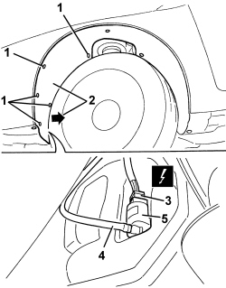

5050B20 WINDSCREEN WASHER ELECTRICAL PUMP - R+R
- Path
- Procedures > 50 AUXILIARY UNITS > 5050 SCREEN WASHERS AND HEADLAMP WASH/WIPE > 5050B WINDSCREEN WASH/WIPE > 5050B20 WINDSCREEN WASHER ELECTRICAL PUMP - R+R
- Kind
- repair procedure (removal / refitting; the operation number is the code)
- Applies to
- all engines; all production periods
- Interactive page
- https://sloeber94.github.io/elrnDB-aBrrSpdr/en/#/946002303
Applies to: all engines; all production periods
 Removing
Removing
 Refitting
Refitting- Position the vehicle on a lift.
- Raise the vehicle.
1. Undo the front bolts fixing the left front wheel arch.
2. Move the wheel arch slightly.
3. Disconnect the electrical connection.
Description | Component |
|---|---|
WINDSCREEN/REARSCREEN ELECTRIC WASHER PUMP MOTOR |
4. Disconnect the windscreen washer supply pipe.
5. Release the electric pump from its housing and let the screen washer fluid flow into a suitable container.

Applies to: all engines; all production periods
Refitting
Removing- Check that the electric pump is not damaged.
- Place the electric pump in position.
- Connect the windscreen washer supply pipe.
- Connect the electrical connection.
- Place the wheel arch in position and fit it.
- Tighten the wheel arch retaining bolts.
- Refill the windscreen washer fluid reservoir.
- Remove the vehicle from the lift.